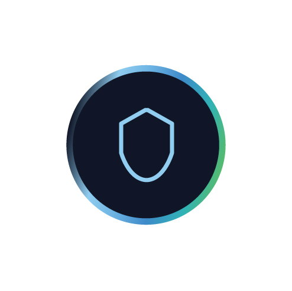
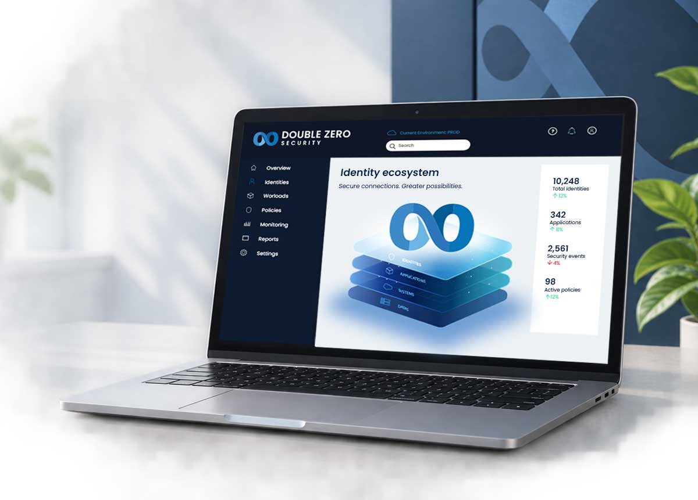
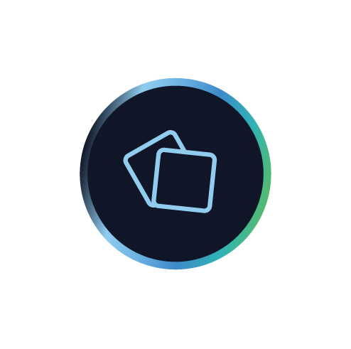
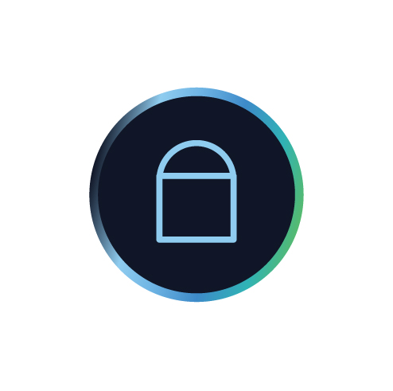
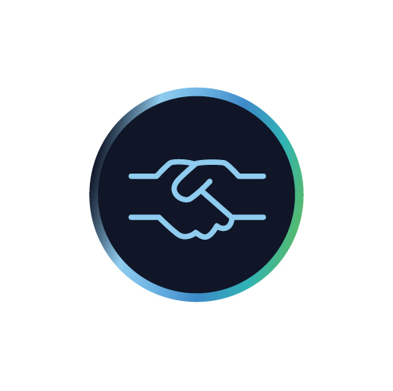
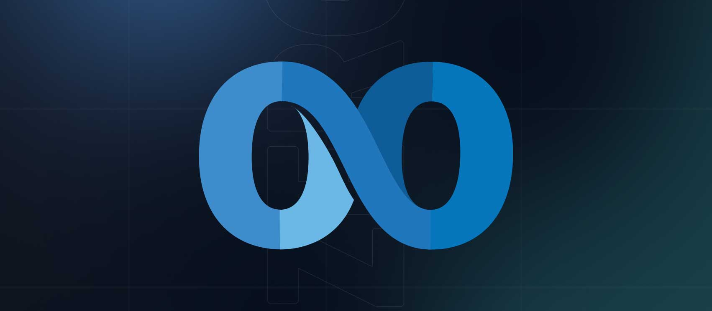
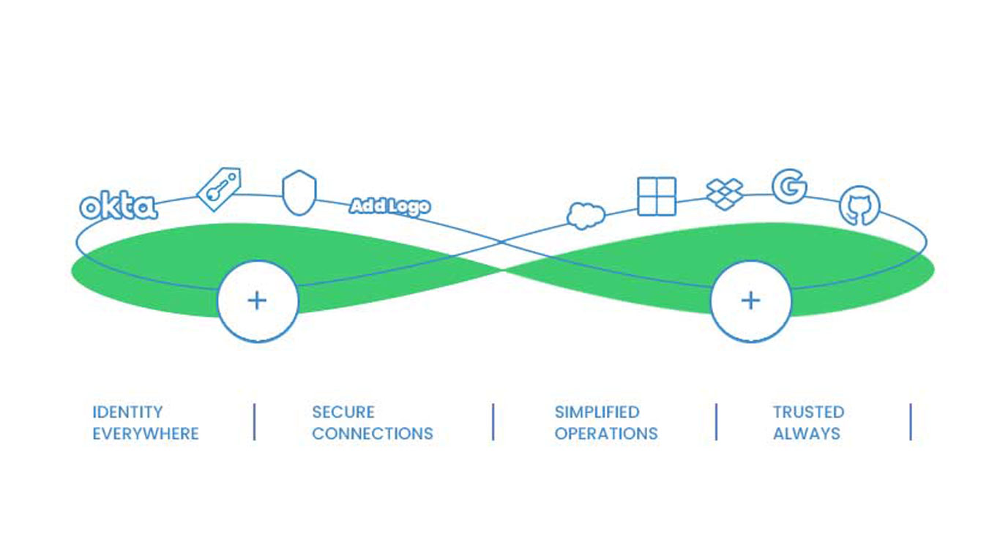
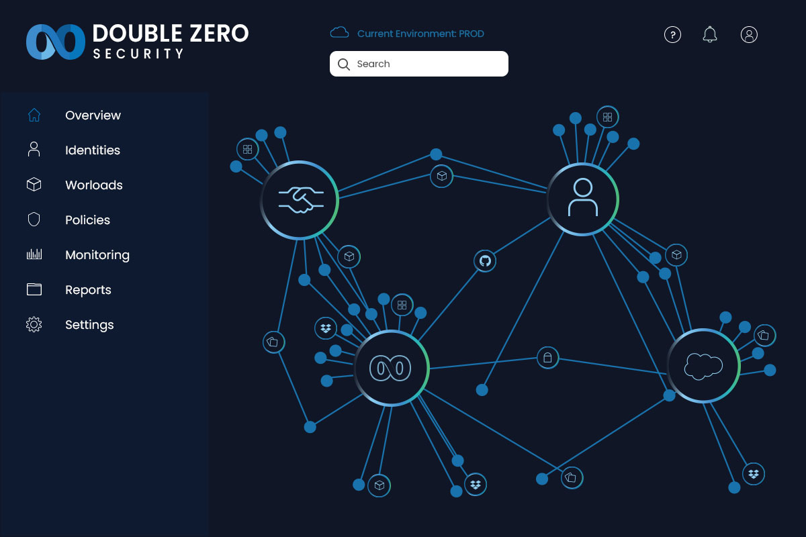
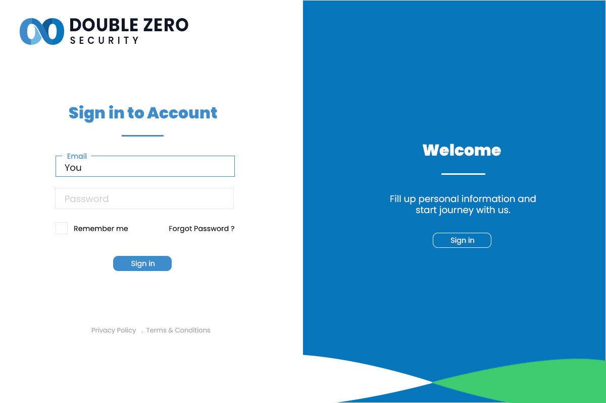
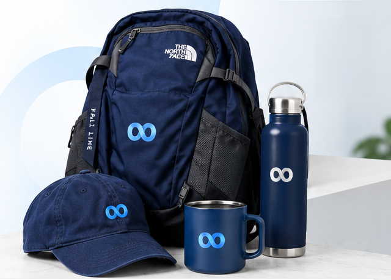

Unifed Identity Fabric
Connect all identities system and application into a single fabric.
Identity Security Platform
Double Zero Security is an identity security platform that connects users, applications, and systems through a unified, secure ecosystem—making complex identity environments simpler to manage and protect.

THE PROJECT
The goal was to create a visual language from the brand identity to the complex identity security operations.

Connect all identities system and application into a single fabric.

Detect risks, anomalies and threats in real time with high accuracy.

Ensure least privillege access and continuous verification.

Deliver clear visibility through advanced analytics and dashboards.

THE IDEA
I created the Double Zero logo and brand identity, inspired by the idea of an infinite loop - the continuous connection between users, workloads and security.
THE CHALLENGE
The Double Zero platform brings together all identities systems and providers into a single secure fabric. The visual concept illustrates this continuous connection - the infinite loop in the logo.

THE EXPERIENCE


THE MERCHANDISING
The brand was extended beyond the screen, creating some physical products and bring the identity to life.
